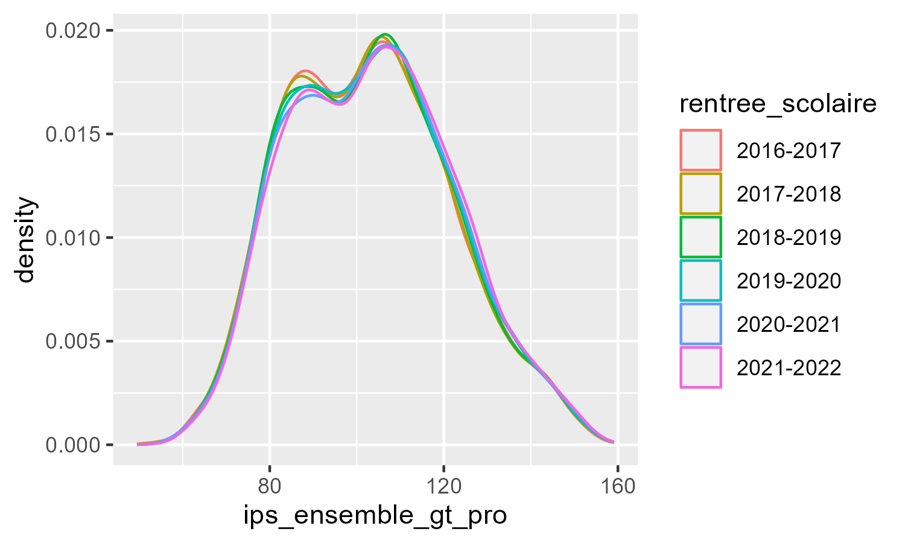
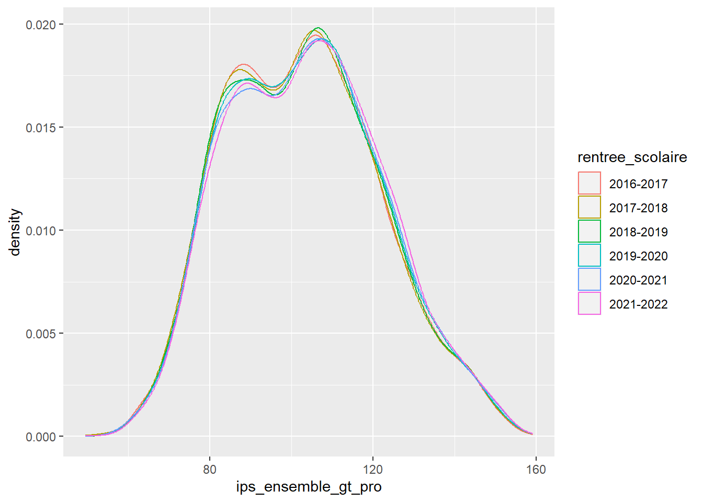
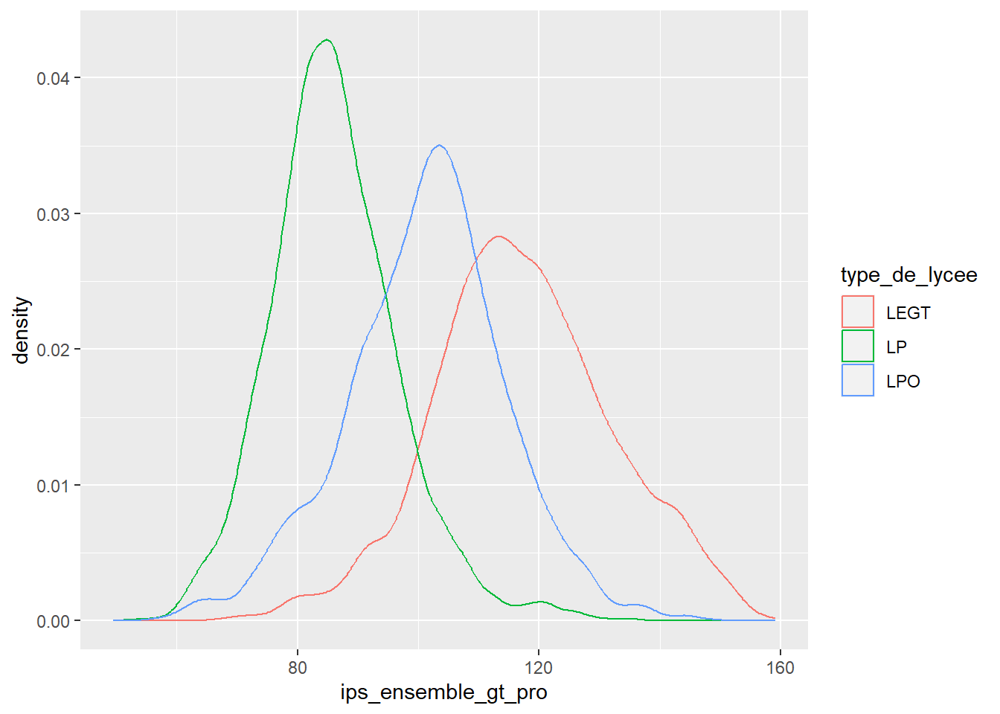

Write your answers directly in this .qmd file, which must compile without errors.
Make sure that your answers are unambiguous and that your code is annotated with comments.
You can write either in English or in French.
Save and render your file regularly to avoid any last-minute technical inconvenience.
The .qmd, the rendered .html or .pdf, and the data should be sent in a .zip by email louis.sirugue@psemail.eu
If you are not familiar with .zip files, first download and install winRAR. Then select your .qmd, .html/.pdf, and data files > right click > Add to archive > select “zip” and save.
Deadline: Sunday the 15th of October 2023, 18:00.
Late submissions will be penalized by half a point for each 30min beyond the deadline.
The cleanliness of the qmd and the html is worth 1 point.
The number of points associated with each question is indicative and may be subject to modifications.
The social position index
The indice de position sociale (IPS) is an index computed by the French Ministry of National Education to measure the socio-economic background of students in primary schools, middle schools, and highschools.
The IPS of students is given by the socio-professional category of their parents. 32 categories are considered, yielding 32 \(\times\) 32 = 1024 possible socio-professional compositions. Each socio-professional couple is attributed an IPS integer value from 38 (unemployed mother, no father) to 179 (mother teacher, father engineer). Several socio-professional couples can have the same IPS. For instance, having a mother policewoman and a father commercial employee, and having a mother technician and a father qualified worker, both yield an IPS of 110.
Since 2022, IPS statistics aggregated at the school level are published every year by the Ministry.
The UAI (Unité Administrative Immatriculée) is a unique identifier assigned to each schooling establishment.
2) Download the dataset and import it in R. Show the structure of the data with the str() function. Do you think the class of the first variable is adequate? Justify your answer. (/1)
'data.frame': 21777 obs. of 15 variables:
$ rentree_scolaire : chr "2018-2019" "2018-2019" "2018-2019" "2018-2019" ...
$ academie : chr "CRETEIL" "CRETEIL" "CRETEIL" "CRETEIL" ...
$ code_du_departement : int 77 77 77 77 77 77 77 77 77 77 ...
$ departement : chr "SEINE-ET-MARNE" "SEINE-ET-MARNE" "SEINE-ET-MARNE" "SEINE-ET-MARNE" ...
$ uai : chr "0771995A" "0772127U" "0772151V" "0772188K" ...
$ nom_de_l_etablissment : chr "LYCEE PROFESSIONNEL LE CHAMP DE CLAYE LYCEE DES METIERS DE L ENERGIE" "LYCEE GENERAL ET TECHNOLOGIQUE GALILEE" "LYCEE PROFESSIONNEL PRIVE LES SINOPLIES" "LYCEE GENERAL ET TECHNOLOGIQUE PIERRE MENDES FRANCE" ...
$ code_insee_de_la_commune : int 77118 77122 77390 77445 77058 77393 77470 77183 77183 77449 ...
$ nom_de_la_commune : chr "CLAYE SOUILLY" "COMBS LA VILLE" "ROISSY EN BRIE" "SAVIGNY LE TEMPLE" ...
$ secteur : chr "public" "public" "privé sous contrat" "public" ...
$ type_de_lycee : chr "LP" "LEGT" "LP" "LEGT" ...
$ ips_voie_gt : num NA 115.6 NA 99.4 121.3 ...
$ ips_voie_pro : num 87.4 NA 114.2 NA NA ...
$ ips_ensemble_gt_pro : num 87.4 115.6 114.2 99.4 121.3 ...
$ ecart_type_de_l_ips_voie_gt : num NA NA NA NA NA NA NA NA NA NA ...
$ ecart_type_de_l_ips_voie_pro: num NA NA NA NA NA NA NA NA NA NA ...
The first variable indicates the school year, and is stored as a character variable. On the one hand it can be seen as a continuous time variable, so one could argue that it should be converted to numeric, typically for it to be used as the x-axis of a line plot. On the other hand it can be seen as a discrete categorical variable whose value can’t be subject to numerical operations such as the addition or the division, so one could argue that the character class is suitable.
3) What is the level of observation of the data? In other words, according to which variable(s) is each row uniquely identified? (/1)
Let’s compute the number of observations per year/school:
library(tidyverse)dt %>%group_by(rentree_scolaire, uai) %>%# Group by year/schoolsummarise(n =n()) %>%# Count number of observationshead() # Look at the first rows of the resulting data
It seems that the variables rentree_scolaire and uai uniquely identify each row. Let’s compute the share of rows uniquely identified by these two variables.
dt %>%group_by(rentree_scolaire, uai) %>%# Group by year/schoolsummarise(n =n()) %>%# Count number of observationsungroup() %>%# Ungroupsummarise(mean(n ==1)) # Share of uniquely identified rows
# A tibble: 1 × 1
`mean(n == 1)`
<dbl>
1 1
100% of rows are uniquely identified by the variables rentree_scolaire and uai. This confirms that the observation level is the school/year.
Datasets in which the same subjects are observed repeatedly over time are called “panel data”. A panel is said to be “balanced” if every subject is observed at each period. If at least one subject is not observed for at least one of the periods, the panel is said to be “unbalanced”.
4) How many periods are there in the data? How many high schools are there in the data? What fraction of high schools is observed at every period? Is the panel balanced? (/2)
There are 6 years of observation and 3697 high schools in the data. About 2% of high schools are missing every year in the data, so the panel is unbalanced.
5) What socio-economic indicator does the standard deviation of the IPS within a school actually capture? Deduce from the data the reason(s) why this information can be missing. (/2)
The standard deviation of the IPS within a school captures the social diversity of its students.
# A tibble: 5 × 2
departement IPS
<chr> <dbl>
1 MAYOTTE 68.1
2 GUYANE 80.2
3 LA REUNION 84.9
4 GUADELOUPE 85.9
5 MARTINIQUE 91.8
The 5 departments with the lowest IPS are the overseas departments.
7) Compute the mean, the standard deviation, the median, and the interquartile range of the IPS separately for public and private high schools. Comment. (/1)
# A tibble: 2 × 5
secteur mean sd median iqr
<chr> <dbl> <dbl> <dbl> <dbl>
1 privé sous contrat 111. 19.1 111. 28.4
2 public 99.0 17.3 98.8 26.4
The average IPS is much larger in private schools. For both public and private schools, the mean is close to median so the distributions seem relatively symmetric. They also have a similar spread given that their standard deviation and inter-quartile range are quite close.
8) Reproduce the following plot. Find out why this distribution is multimodal. (/3)

ggplot(dt, aes(x = ips_ensemble_gt_pro, color = rentree_scolaire)) +geom_density()

ggplot(dt, aes(x = ips_ensemble_gt_pro, color = type_de_lycee)) +geom_density()

The reason for the multimodality is a marked heterogeneity by type of high school.
9) Find your high school in the data, and compute the share of high schools with a lower average IPS than your high school in 2021-2022. (/1)
ips_stjo <- dt %>%filter(rentree_scolaire =="2021-2022"& academie =="RENNES"& nom_de_l_etablissment =="LYCEE GENERAL PRIVE SAINT JOSEPH") %>%pull(ips_ensemble_gt_pro)ips_stjo
10) Compute the average IPS by type of high school. Use the functions sd() and pt() to compute their 99% confidence interval. If someone tells you that the IPS in their high school is 87, what type would you guess for that high school? (/3)
Given these descriptive statistics, a high school with a 87 IPS is likely a professional high school.
11) For this question, omit the “polyvalent” high schools (LPO) to focus only on professional high schools and general & technological high schools. Based on the results of the previous questions, find a simple rule to predict the type of high school using only the IPS. Generate the resulting predictions and compute the share of correct predictions. Describe how you could improve the predictions (just explain your idea(s) in one or two sentences but don’t implement them). (/3)
From questions 8 and 10 it is clear that most of the IPS distribution is below 100 for professional high schools and above 100 for general & technological high schools. This threshold can be used to predict the type of high school.
The 100 IPS threshold can distinguish a professional high school from a general & technological high school with 90% accuracy.
To improve the predictions, other variables could be used. For instance, instead of using the 100 IPS threshold on the whole dataset, the threshold could be adapted to each department according to where the IPS distributions for the two types of high school cross.